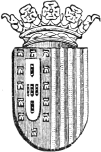
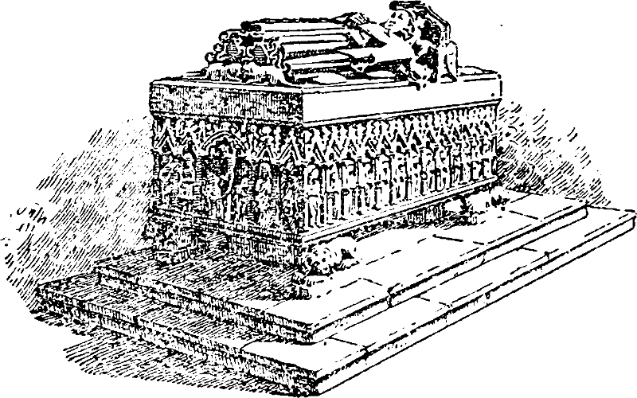
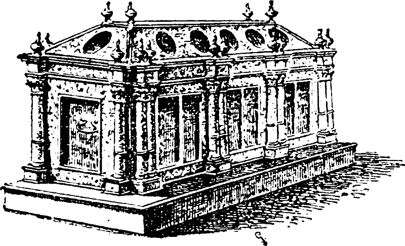
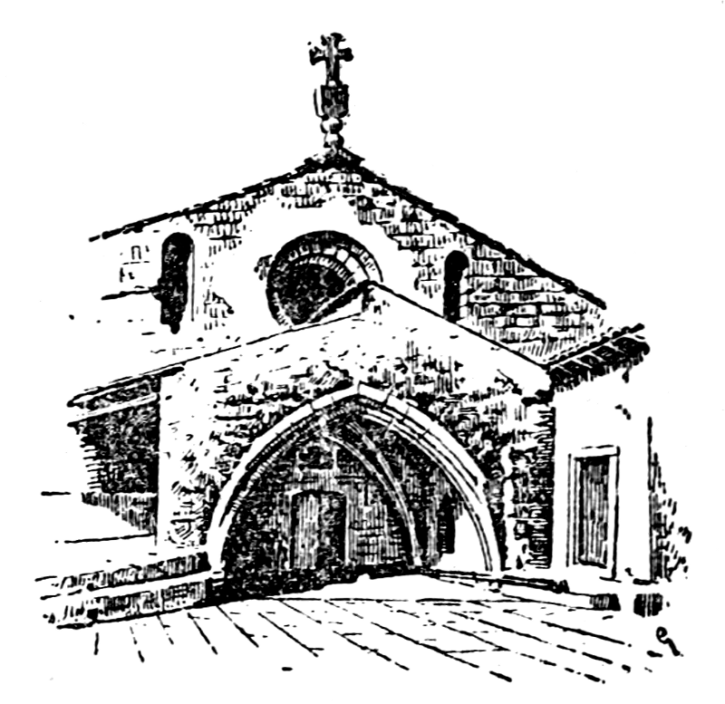

Title: Isabel d'Aragão a Rainha Santa
Author: Anonymous
Release date: February 19, 2011 [eBook #35324]
Most recently updated: January 7, 2021
Language: Portuguese
Credits: Produced by Pedro Saborano
ISABEL D'ARAGÃO
A
RAINHA SANTA
———
HISTORIA SUCINTA DA SUA VIDA, MORTE E EXCELSAS VIRTUDES
———
DEDICADA AOS FIEIS

COIMBRA
GRAFICA CONIMBRICENSE, LIMITADA
—
1921
ISABEL D'ARAGÃO
A
RAINHA SANTA
———
HISTORIA SUCINTA DA SUA VIDA, MORTE E EXCELSAS VIRTUDES
———
DEDICADA AOS FIEIS
COIMBRA
GRAFICA CONIMBRICENSE, LIMITADA
—
1921
{3}
Muito se tem escrito ácerca da vida da excelsa e virtuosissima D. Isabel d'Aragão, Esposa d'el-rei D. Dinís; mas impunha-se ha muito a publicação dum folheto, como este, que sendo conciso na sua descrição não deixasse de relatar os factos que mais distinguiram Aquela que a cidade de Coimbra escolheu para sua Augusta Padroeira e Protectora.
O que o autor deste folheto teve em vista foi facultar aos fieis, com grande economia de preço, um livrinho de leitura facil e corrente, ao alcance de todos, onde a historia sagrada da Rainha Santa possa deixar bem arreigada no espirito dos crentes a obra sublime, verdadeiramente maravilhosa, que lhe concedeu logar na côrte celestial.
As notas que colhemos foram, principalmente, extraídas do monumental trabalho de investigação historica do Ex.o Sr. Dr. Antonio Garcia Ribeiro de Vasconcelos, na sua tão apreciada obra D. Isabel d' Aragão.{4}
*
* *
A fama de santidade da Rainha Santa Isabel estende-se por todo Portugal e por muitas terras de Hespanha. Em Coimbra, porém, é tão grande que em parte alguma do nosso país se realizam festas tão pomposas em honra dum santo, como nesta cidade, onde concorrem para mais de 50:000 pessoas por essa ocasião.
É nos momentos de luta pela adversidade da vida que os conimbricenses, principalmente, recorrem á protecção da Rainha Santa na sua fervorosa suplica, e se nem sempre logram alcançar a satisfação das suas preces, é já poderoso linitivo para a sua dôr a lembrança de que Ela nunca desamparou os infelizes com a sua divina graça.
Isabel d'Aragão tendo sido um grande exemplo de virtudes, deu tambem uma prova bem frisante do seu amor a Coimbra, determinando em seu testamento que o seu corpo sagrado repousasse no mosteiro de Santa Clara desta cidade, onde Ela esteve clausurada e donde foi trasladado o seu corpo para o novo mosteiro do mesmo nome.
É, pois, pouco quanto façam os conimbricenses em honra da memoria sagrada da Sua excelsa Padroeira.{5}
A Rainha Santa Isabel, que Coimbra se ufana de ter como desvelada Protectora e valiosa Padroeira, nasceu na cidade de Saragoça (Espanha), no ano de 1271.
Filha do Principe real D. Pedro de Aragão e de sua esposa D. Constança, o seu nascimento foi desde logo iluminado pela graça divina, pois que seu avô, El-rei D. Jaime, que até aí vivia em grande discordia com D. Pedro de Aragão, imediatamente se congraçou com este, passando ambos a viver na mais doce harmonia.
Assim demonstrou Deus aos homens que esta menina estava reservada a ser na terra a medianeira da paz, o Anjo predestinado a estabelecer a harmonia e a concordia entre os desavindos, facto que mais tarde, quando Rainha de Portugal, se verificou nas diversas desavenças entre seu esposo El-rei D. Dinís e seu filho D. Afonso IV.
A Rainha Santa Isabel foi, como já dissemos, aureolada desde o seu nascimento pela graça do Senhor. As suas preciosas virtudes bem cedo se revelaram, crescendo nela com a idade a fama que tanto a impôs á consideração de todas as côrtes da Europa, facto que despertou em bastantes principes o desejo de possuirem como esposa tão excelsa senhora.{6}
Foi á côrte de Portugal, felizmente, que coube a suprema ventura de ser a preferida entre todas as outras, merecendo El-rei D. Dinís a gloria de ter como consorte um tesouro de tantas virtudes e de tão preciosos encantos.
*
* *
O casamento de D. Dinís com D. Isabel celebrou-se por procuração na antiga cidade de Barcelona, tendo lugar este acto no dia 11 de Fevereiro de 1282 e contando a futura Rainha de Portugal apenas 11 anos de idade. Êste auspicioso enlace constituiu um motivo de grande regosijo para todos os portugueses, antevendo estes os enormes beneficios deste casamento, o qual foi muito festejado e aclamado em todo o país com demonstrações de grande alegria e verdadeira satisfação.
A saída de D. Isabel para Portugal causou a seus pais grandes tristesas, custando-lhes imenso essa separação pelas profundas saudades que D. Isabel deixava em todos os corações que muito a estremeciam.
De Espanha até Coimbra foi a excelsa Rainha delirantemente aclamada por todo o povo que acorria á sua passagem, salientando-se mais essas carinhosas manifestações na antiga vila de Trancoso, onde, no dia 24 de Junho de 1282, no templo de S. Bartolomeu, se celebraram com toda a pompa as bençãos nupciais.
Em Coimbra, onde a esse tempo residia a côrte juntamente com a principal nobresa do reino, as manifestações de contentamento e alegria pela chegada dos régios nubentes, atingiram o mais delirante entusiasmo, conquistando logo a Rainha D. Isabel a simpatia e o amor dum povo que, mais tarde, havia de herdar o seu mais precioso tesouro—o sagrado corpo que todos{7} hoje veneramos—e que esta cidade conserva com a mais desvelada e respeitosa devoção.
As manifestações de regosijo com que a cidade recebeu os régios consortes foram, pois, verdadeiramente grandiosas, vestindo a cidade as suas melhores galas para bem lhes significar o contentamento de que se achava possuida por motivo daquele enlace, cujos efeitos tanto se evidenciaram na vida da nação portuguesa, e de que Coimbra comparticipou em larga escala pelos benéficos actos de caridade que a Santa Rainha espalhou por toda a parte.
Foi nesta cidade, principalmente, que D. Isabel de Aragão manifestou mais claramente a pureza da sua alma. Os actos de caridade que praticou, os socorros por ela prestados á indigencia, aos órfãos, ás viúvas e ás donzelas abandonadas, foram os primeiros lavores que lhe teceram a sua coroa de gloria; a fundação de asilos, de albergues e de hospitais, que a sua magnificencia sustentou e onde se recolhia uma legião de infelizes, originou, sem duvida, a fama de santidade que bem cedo a distinguiu e que, mais tarde, a 25 de Maio de 1625, dia da Santíssima Trindade, a Igreja confirmou, englobando-a no numero dos eleitos do Senhor.
Se durante a vida de El-rei D. Dinís a acção da Rainha Santa foi um constante manancial de actos virtuosos, a partir do momento da sua viuvês, a sua acção tornou-se verdadeiramente exemplar.{8}
O numero de factos que desde então assinalam tão gloriosa existencia na terra, mais e mais fazem arreigar na alma do povo a convicção dos designios de Deus por Ela tão santamente interpretados.
Sem todavia esquecer os deveres de Rainha, que lhe absorviam uma grande parte dos seus cuidados, e não poucas vezes foram motivo de profundos desgostos, D. Isabel de Aragão cinge livremente o hábito de freira Clarista e volvendo os olhos piedosos para um mais largo horisonte, consagra-se completamente a obras de caridade, fundando e auxiliando hospicios e asilos, nos quais se albergam, sob a sua protecção, muitas infelizes que se regeneraram pelos seus conselhos e alcançaram na terra a felicidade que só sabem gosar as almas puras e simples.
Querendo encaminhar-se pela estrada luminosa que da terra se eleva até Deus, um dos seus primeiros cuidados, ao ver-se cingida pela roupagem da viuvês, foi trocar os faustos das glorias terrenas pela humildade da clausura a que, como já dissemos, livremente se sujeitou.
*
* *
Junto dos seus Paços riais corriam vagarosamente as obras para a fundação do Convento de Santa Clara, obras que prometiam eternizar-se por demandas entre os frades Cruzios e D. Maior Dias, fundadora daquele convento, e que certamente ficariam incompletas se não fosse o auxilio e protecção que a Rainha Santa dispensou para a sua rapida conclusão.
Uma vez concluido, cuidou logo a Rainha Santa em fundar junto deste convento um asilo para órfãos e para a pobresa envergonhada, chamando para junto de{9} si algumas amas de leite com o encargo de alimentarem as crianças desvalidas!
A maior parte do seu tempo tinha-o a Rainha Santa distribuido por forma a satisfazer os seus deveres de Rainha e cristã; o restante empregava-o no ministerio da caridade visitando os asilados, a quem não só consolava com a sua palavra, mas muitas vezes servia de carinhosa enfermeira curando as chagas que lhes corroiam o corpo.
Nesta e em muitas outras obras de verdadeira abnegação dispendia a Rainha Santa quasi toda a sua fortuna. Com o auxilio de Deus, a quem firmemente procurava engrandecer com os merecimentos das suas preciosas virtudes, nunca a Rainha Santa lutou com dificuldades para se desempenhar da sua nobre missão. Os proventos de que dispunha parece que tinham o condão de se multiplicar e, se algumas vezes houve em que o seu socorro tinha de fazer face a maiores calamidades, então eram as Rosas que, adquirindo a forma de oiro reluzente, premiavam os seus actos de caridade e satisfaziam os encargos adquiridos para garantir o pão aos famintos!
Da sua vida, tão brilhantemente documentada na preciosa obra de S. Ex.ª o sr. Dr. Antonio Garcia Ribeiro de Vasconcelos, erudito professor da Universidade de Coimbra[1], constam muitos e importantes factos da vida gloriosa da Rainha Santa, traduzidos todos eles nos mais altos beneficios em favor dos desprotegidos.{10}
Em Junho de 1336 teve a Rainha Santa conhecimento de que seu filho D. Afonso IV e seu neto D. Afonso XI, rei de Castela, se haviam indisposto por motivo de graves acontecimentos, tendo-se declarado a guerra entre aqueles dois poderosos monarcas.
Quando a Rainha Santa soube de tal resolução imediatamente se resolveu a partir para Estremoz, lugar onde a esse tempo estava seu filho acompanhado de toda a Côrte.
Êste propósito foi prudentemente combatido pelos medicos da Rainha Santa, os quais, temendo mais o excesso do calor e a fadiga dessa longa viagem do que a idade da virtuosa Senhora, se apressaram a demovê-la dessa resolução. Inuteis rogos e infrutiferas tentativas! A Rainha Santa, despresando esses bons conselhos e animada sómente em restabelecer a paz entre os reis desavindos—filho e neto—, parte apressadamente de Coimbra, caminhando sob um sol abrasador, e chega finalmente junto das fortalezas de Estremoz, abatida e fatigada, mas cheia de animo para cumprir a sua carinhosa missão.
Logo que a sua chegada é conhecida no acampamento de D. Afonso IV, imediatamente se suspendem as hostilidades e todos se abeiram do leito da Rainha Santa para lhe prodigalizarem os cuidados que a sua melindrosa saude exigia.
Baldados esforços porque o mal agravava-se de momento para momento. Uma pústula que rapidamente{11} lhe apareceu num braço tornou mais melindroso o seu estado e, no dia 4 de Julho, manhã cedo, a Rainha Santa declarou que queria receber os ultimos Sacramentos. Na tarde desse mesmo dia as forças principiaram a faltar-lhe, a Rainha Santa vê que é chegada a sua ultima hora, e erguendo o pensamento até ao Ceu, encarrega a Mãe de Deus de lhe receber a alma, pronunciando com toda a suavidade estes versos do hino eclesiastico:
Mãe de graças e Misericordia
Maria piedosa e forte:
Livra a minha alma, recebe-a
Na hora da minha morte.
A seguir recita com visivel comoção algumas orações; os olhos fecham-se lentamente, o peito deixa de arfar, e todos os presentes, estupefactos ante aquele quadro tão emocionante, compreendem que a alma pura da Rainha Santa, solta do seu veneravel corpo, subia aos céus a receber o premio das suas virtudes, descançando para sempre na paz do Senhor, onde eternamente gosará a bemaventurança com que Deus premeia os seus eleitos.
*
* *
É, pois, no reino celestial que a nossa Santa Protectora está recebendo o premio das suas boas acções e dos seus constantes trabalhos. Ali, no seio de Deus, junto da Virgem Santissima, intercede pelo seu povo, por aqueles que a ela recorrem com a alma angustiada pelas dôres humanas, e que jamais esquecem o seu nome para lhe tributar as homenagens do seu reconhecimento. Essas homenagens concretizam-se no culto{12} fervoroso de todos os portugueses pela Santa Rainha e, mui especialmente, do povo de Coimbra que por Ela nutre o maior respeito e a mais significativa devoção.
Logo que a Rainha Santa entregou a sua alma a Deus, o primeiro cuidado da côrte foi escolher local para depositar o corpo de tão excelsa Senhora, opinando uns para que fôsse sepultado no Convento dos Franciscanos, em Estremoz, e outros para que fôsse trasladado para a Sé de Evora, a cidade mais proxima daquela terra. Por conselho de El-rei procurou-se o testamento de D. Isabel e vendo-se por ele que a Rainha Santa queria ser sepultada em Coimbra, na Igreja de Santa Clara, foi respeitada esta vontade, dando-se logo ordens para se pôr em pratica o desejo ali expresso.
Apezar das opiniões em contrario, prevaleceram as determinações de El-rei.
O prestito funebre saiu de Estremoz na tarde do dia 5 de julho e, em marchas apressadas, chegou a Coimbra no dia 11 do mesmo mês, tendo atravessado tão longo percurso debaixo dum sol abrazador.
As inumeras pessoas que constituiam o prestito funebre foram tomadas de verdadeiro espanto quando, ao 3.º dia de viagem, notaram que o ataúde onde vinha o corpo de Santa Isabel principiava de abrir algumas fendas, escorrendo por entre elas um liquido que todos supozeram ser proveniente da decomposição do cadaver.{13}
Mas, feliz engano! Esse liquido, longe de exalar qualquer cheiro desagradavel, antes era ameno e consolador, espalhando no espaço um tal aroma que aqueles que a principio se sentiam inquietos e desconfiados, logo se aproximaram do ataúde, louvando o Senhor por esta manifestação da sua omnipotencia.
Quando o cortejo chegou a Coimbra deram-se então scenas comovedoras e lancinantes entre a população citadina. Todos á porfia queriam beijar o ataúde onde vinha a sua Protectora, a sua desvelada Bemfeitora, ouvindo-se choros de verdadeiro compungimento pela morte da virtuosa Rainha, cujo passado tinha sido um manancial de graças e bondade!
Quando o ataúde deu entrada na igreja de Santa Clara muita gente supôs que o corpo da Rainha Santa seria exposto à veneração do publico. Tal se não deu; no dia seguinte, 12 de Julho, é que se celebraram os oficios divinos por alma de D. Isabel, sendo estes actos revestidos de toda a solenidade e com a assistencia de alguns Prelados, Professores da Universidade, Rei, Cabido e muitos religiosos das diversas ordens.
Logo que eles terminaram, foi o ataúde transportado para uma capela que a Rainha Santa havia mandado edificar ao fundo da Igreja e na qual estava o tumulo de pedra que em sua vida também mandara construir (fig. 1).
Foi dentro dêste precioso moimento de pedra, ricamente cinzelado, que se colocou o ataúde tal qual veiu de Estremoz, envolvido numa pele de boi e com um pano de brocado repregado por cima.
Sobre o ataúde colocaram o bordão de peregrina e uma bolsa que o arcebispo de S. Tiago de Galiza ofereceu à Rainha Santa quando ela visitou esta cidade,{14} sendo em seguida fechado o tumulo com a pesada pedra que ainda hoje o cobre e na qual vemos representada a figura da Rainha Santa com habito de freira.
Assim se conservou até ao dia 26 de Março de 1612, 276 anos depois da sua morte, dia em que foi aberto por consentimento do Sumo Pontifice.

(Fig. 1)
Esta cerimonia, que se tornou necessaria para se proceder ao processo de canonização de D. Isabel, foi presidida pelo Bispo de Coimbra D. Afonso de Castelo Branco, e tendo como assistentes D. Martim Afonso, Bispo de Leiria, Dr. Francisco Vaz Pinto, dois medicos, um cirurgião e algumas testemunhas a quem foi confiado o encargo de examinarem os restos mortais da Rainha Santa.
Pedimos licença para trasladar para aqui o relato que sobre esta cerimónia encontramos no autorizado{15} livrinho—Historia Popular da Rainha Santa Isabel—Protectora de Coimbra.........
«Subindo à capela superior, onde estava o tumulo, e analisando-o com todo o cuidado por fóra, acharam-no exactamente como havia ficado 276 anos antes, quando sobre ele se colocara a tampa, depois de introduzido o ataúde que encerrava o corpo. Apenas a piedade dos fieis o havia rodeado de demonstrações da fé e amor que os prendia Áquela cujos restos ali estavam encerrados.
«Ninguem sabia se o tumulo continha sómente os ossos da santa Esposa de D. Dinís, se mais alguma cousa que ainda restasse do corpo e mortalhas; por isso todos estavam anciosos por que o tumulo se abrisse.
«Retirada a pedra, encontrou-se a bolsa e o bordão de peregrina, que foram pelo bispo-conde entregues à guarda das religiosas.
«O ataúde ainda se achava envolvido em restos da pele de boi e da tela vermelha que havia sido repregada por cima.
«Com dificuldade se despregou a taboa superior do ataúde, cortaram-se à tesoura os numerosos envoltorios em que a santa Rainha fora amortalhada em Extremoz, antes de ser metida no caixão, os quais, se encontraram com admiração de todos, em perfeito estado de conservação, como se ali tivessem sido colocados pouco antes.
«Por fim descobriu-se o rosto, peito e braço direito da nossa excelsa Protectora. Todos cairam de joelhos, estupefactos pelo grande milagre que viam!
«O corpo achava-se inteiro e incorrupto, branco como se fosse de cera, a cabeça coberta de louros cabelos,{16} perfeitamente seguros na pele, a boca e olhos fechados e bem compostos, tendo impresso na fisionomia o cunho da bondade e majestade que haviam sido apanagio da Rainha Santa. Vestia o habito de estamenha das freiras de santa Clara, e um pano branco de linho envolvia-lhe a cabeça. Do ataúde saia aroma suave.
«Á vista de tal milagre as religiosas cantaram o hino do velho Simeão, dizendo: Agora, Senhor, já podeis deixar-nos morrer em paz, porque os nossos olhos viram as grandes maravilhas do vosso poder.
«Feito pelos medicos e cirurgião o exame minucioso que se lhes pedia, concertaram-se de novo as mortalhas, o tumulo fechou-se, e de tudo se lavrou o auto competente».
Com o decorrer do tempo e as sucessivas enchentes do rio Mondego muito grave se tornou a vida monástica no convento fundado pela Rainha Santa. Como as invernias ameaçassem sepultar nas areias daquele rio as paredes do convento, as religiosas reciavam, e com razão, ficar sepultadas sob os seus escombros, perdendo-se neles todas as preciosidades que enriqueciam a Igreja e entre as quais devemos destacar o precioso corpo da Rainha Santa.
Em vista, pois, dos graves e constantes perigos a que estava sujeita a comunidade do velho mosteiro, dignou-se El-rei D. João IV ouvir os rogos das religiosas claristas e mandou erigir no monte da Senhora da Esperança um novo convento para sua habitação.
As obras deste grandioso edificio, que se prolongaram durante muito tempo, foram iniciadas no dia 5 de julho de 1649 e só no dia 29 de Outubro de 1677,{17} 28 anos depois, êle estava apto a receber as referidas religiosas.
Por ordem do Principe regente D. Pedro, 2.º filho de D. João IV, procedeu-se no dia 27 de Outubro daquele ano á abertura do túmulo da Rainha Santa, assistindo a este acto alguns representantes da Côrte, 8 Bispos. Professores da Universidade e muitos religiosos das diversas ordens de Coimbra. Como se verificasse que o caixão que guardava o corpo da Rainha Santa estava um tanto deteriorado, logo se procedeu á construção dum outro que o substituisse e para o qual foi mudado o corpo da veneranda Padroeira de Coimbra. Durante esta operação quiz o acaso que se soltassem algumas pregas das roupagens que envolviam os despojos de Santa Isabel, podendo assim todos os presentes ver a mão direita desta virtuosa Rainha, alva como a neve, e em tão perfeito estado de conservação que logo provocou o natural e piedoso desejo de ser osculada, como o foi com efeito, por todos aqueles que tiveram a suprema felicidade de ali estar reunidos.
Duraram os preparativos da trasladação para o novo convento ainda 2 dias e, em 29 de Outubro, foi a Rainha Santa para ali conduzida procissionalmente, acompanhada de muitos milhares de pessoas, e tendo de atravessar por entre duas alas compactas de povo que se estendiam até ao novo convento.
Como a essa data não estivesse ainda concluida a Igreja que hoje admiramos, foi o corpo da Rainha Santa conduzido para uma pequena sala existente ao fundo do côro, colocando-se então no precioso e riquíssimo túmulo de prata (fig. 2) que D. Afonso de Castelo Branco, um dos mais notaveis Prelados desta diocese, mandara fabricar, e no qual ainda hoje se guarda o{18} precioso tesouro que Coimbra venera com o maior respeito e o mais devotado amor!
*
* *
Concluida que foi a Igreja de Santa Clara, procedeu-se no dia 3 de julho de 1696 a nova trasladação da Rainha Santa para a tribuna da Capela-mór, lugar em que esteve durante muitos anos e donde teve de mudar-se por causa da invasão dos francêses.

(Fig. 2)
No dia 1 de Outubro de 1810 tiveram as freiras conhecimento de que os soldados de Massena, enfurecidos com a derrota que tiveram no Bussaco dias antes, vinham a caminho de Coimbra. Sabedoras do pouco respeito que aos soldados franceses mereciam as preciosidades do nosso país, apressaram-se elas em esconder as melhores alfaias do Convento e, apressadamente, retiraram tambem do seu lugar o tumulo da Rainha Santa, o objecto da sua mais estremecida estima, indo ocultá-lo numa cela do dormitorio, a última do lado esquerdo, onde dois pedreiros de absoluta confiança o{19} entaiparam sob um arco que engenhosamente foi disfarçado com uma cortina de alvenaria.
Aí se conservou o tumulo da Rainha Santa até ao ano de 1814, data em que se estabeleceu a paz geral, sendo então novamente mudado para o seu lugar com grande regosijo das freiras claristas e ainda mais do povo de Coimbra que anciosamente desejava acercar-se do tumulo da sua desvelada Protectora, da sua excelsa Padroeira.
*
* *
Infelizmente não pararam aqui as mudanças a que esteve sujeito o túmulo da Rainha Santa.
Quando em 1852 D. Miguel visitou esta cidade, resolveram as freiras, certamente no proposito de ver tambem a Rainha Santa, mudar o seu tumulo para o côro superior da Igreja. Com efeito, no dia 21 de Outubro daquele ano, foi D. Miguel a Santa Clara e aí, na presença das pessoas do seu séquito, foi aberto o caixão onde está o corpo da excelsa Rainha, esposa de D. Dinís.
Para o mesmo efeito foi ainda o tumulo da Rainha Santa mudado no ano de 1852, por ocasião da visita de D. Maria II a Coimbra, e em 1860 quando aqui esteve El-rei D. Pedro V. De então até 1912 conservou-se sempre o tumulo da Rainha Santa no referido côro.
Como a esta data o convento de Santa Clara não tivesse já quem zelosamente pudesse cuidar do tumulo da Rainha Santa, e porque o local onde êle estava não oferecia as necessarias condições de segurança, podendo facilmente ser violado por aqueles que vieram estabelecer residencia neste convento, praticando talvez um desacato que ferisse profundamente as crenças dos devotos da Rainha Santa, conseguiu a Mesa desta Confraria que o{20} tumulo fôsse mudado para o lugar que lhe era mais proprio, a tribuna da Capela-mór da Igreja, lugar onde agora se conserva e, segundo cremos, se conservará definitivamente. Porque esta mudança se deu em nossos dias, podemos aqui reproduzir com toda a fidelidade a forma como ela decorreu, louvando nós o Senhor por nos dar ocasião de presenciar tão emocionante como piedoso acto, cuja descrição respigamos dum jornal desta terra[2].
«Do côro superior da Igreja de Santa Clara, foi no domingo trasladado para a tribuna da Capela-mor da mesma Igreja, o riquíssimo túmulo de prata e a respectiva urna que encerram o venerando corpo da Rainha Santa.
«Esta trasladação, sem dúvida motivada pelos rumores que corriam nesta cidade, rumores estes em que se salientavam até actos menos respeitosos, fez-se com a possível reserva afim de evitar aglomerações nada convenientes ao bom êxito da trasladação.
«Ainda assim, o número de pessoas que se reuniu no templo de Santa Clara, na ância de assistir a tão piedoso acto, foi elevado, vendo-se ali representadas muitas das principais famílias de Coimbra.
«Perto das 5 horas da tarde, quando estavam concluídos os preparativos para a deslocação do túmulo, a entrada no côro foi rigorosamente interceptada, ficando ali apenas, além do pessoal necessário para a trasladação, os srs. Francisco José da Costa e Antonio Augusto Lourenço, da Mesa da Rainha Santa; Francisco Nazaré,{21} Joaquim Rasteiro Fontes, Custódio José da Costa, Adriano Ferreira Rocha e João Ribeiro Arrobas, os quais foram convidados a examinar as fitas lacradas que ligavam a tampa do túmulo.
«Verificada a sua inviolabilidade, foram quebradas as fitas e retirada de dentro do túmulo a urna em que repousa Santa Isabel. Esta operação, é bom frisá-la, foi feita com o maior respeito e o seu bom exito, deve-se, sem duvida, aos srs. Antonio Augusto Gonçalves e Antonio Viana que, mui sensatamente, dirigiram os trabalhos da trasladação.
«No momento em que ia conduzir-se para a tribuna da Igreja o caixão em que se encerra o corpo da Rainha Santa, uma comissão de senhoras obteve do sr. Antonio Augusto Gonçalves permissão para conduzir a urna, sendo pois esta transportada pelas seguintes: D. Maria do Carmo Joice Dinís, D. Maria de Gusmão Galvão, D. Elvira Refoios de Matos, D. Maria José Joice Dinís, D. Maria Amelia Carneiro de Sousa Pires, D. Isabel de Sousa Coutinho (Linhares), D. Tafones Roxanes de Carvalho, D. Maria do Carmo Forjaz, D. Maria do Ceu Pinto e D. Matilde de Matos Mancelos Aragão.
«Logo que a urna deu entrada na Capela-mór, as inúmeras pessoas que ali a aguardavam prostraram-se respeitosamente na mais viva e sincera contemplação, vendo-se em muitos olhos o deslisar de lagrimas constantes. É que dentro daquele ataúde está em repouso não só o corpo duma Mulher nobre por excelência e virtuosa e santa pelos rasgos generosos da sua candida alma, mas, o que é mais, por estar ali concentrada a fé ardente e sincera de milhares de crentes que nos transes dolorosos da sua atribulada existencia envolvem nas suas fervorosas preces o nome da Rainha Santa{22} como um balsamo consolador para as suas misérias e para as suas desditas.
«Por isso as pessoas que ali se reuniram para assistir à passagem da Rainha Santa, viveram bem felizes aquele rapido momento da existencia. A noite, porém, ia avançando e era forçoso pôr termo aos trabalhos da trasladação, colocando-se no local designado o ataúde da Rainha Santa.
«Feito este serviço o povo começou a retirar-se, louvando a nobre ideia de trasladar para a Igreja a santa querida que passou a vida na senda do bem, espalhando por toda a parte o perfume das suas rosas, que são aquelas que lhe engrinaldam o nome querido e ainda hoje digno de todo o respeito.»
Por ser muito curiosa, damos neste lugar a noticia das vezes que tem sido aberto o túmulo e caixão da Rainha Santa.
A notícia descritiva dêsses actos tão solenes, extraímo-la da notável obra do Exmo. Sr. Dr. Antonio Ribeiro de Vasconcelos—D. Isabel de Aragão—, primoroso trabalho que S. Ex.ª publicou em 1894, e que é bem um autentico testemunho das suas altas qualidades de escritor erudito e consciencioso.
I.—Segunda feira, 26 de março de 1612.
II.—Quarta feira, 27 de outubro de 1677.
III.—Domingo, 11 de janeiro de 1695, na capela que provisoriamente serviu de Igreja em o novo Mosteiro.{23}
IV.—Segunda-feira, 2 de julho de 1696, ás 8 horas-da manhã.
V.—No mesmo dia, horas depois, nova abertura pelas freiras do convento, por estas não terem assistido como desejavam à primeira cerimónia.
VI.—No dia 4 do mesmo mês e ano foi novamente aberto o tumulo por se desconfiar que as freiras, num excesso do seu amor para com a Rainha Santa, se tivessem apropriado de algumas reliquias ou mesmo furtado o seu corpo ocultando-o em sítio só por elas conhecido.
VII.—Segunda feira, 9 de agosto, foi o tumulo aberto na presença de D. Pedro II.
VIII.—Domingo, 29 do mesmo mês e ano, na presença de D. Carlos, Arquiduque da Austria.
IX.—Domingo, 21 de outubro de 1832, na presença de D. Miguel e das Infantas D. Isabel Maria e D. Maria de Assunção.
X.—Domingo, 25 de abril de 1852, na presença de D. Maria II, de El-rei D. Fernando seu esposo, do Principe real D. Pedro e do Infante D. Luís.
XI.—Quinta feira, 17 de junho de 1852, para serem substituidas as vestes que amortalhavam a Rainha Santa por outras oferecidas por D. Maria II.
XII.—Quinta feira, 29 de novembro de 1860, na presença de D. Pedro V e de seus irmãos D. Luís e D. João.
XIII.—Quarta feira, 22 de outubro de 1862, na presença do Principe Humberto, depois Rei de Italia, que foi hospede da nossa Universidade.
XIV.—Quarta feira, 9 de dezembro de 1863, na presença de El-rei D. Luís e de sua esposa D. Maria Pia.
XV.—Quarta feira, 21 de junho de 1865, na presença de D. Isabel Cristina, Princesa Imperial do Brasil e de seu esposo o Conde de Eu.{24}
XVI.—Sabado, 4 de julho de 1868, na presença do Infante D. Augusto.
XVII.—Segunda feira, 4 de março de 1872, na presença de D. Pedro II, Imperador do Brasil.
XVIII.—Quarta feira, 14 de maio de 1875, na presença de El-rei D. Fernando, do Infante D. Augusto e da Condessa de Edla.
XIX.—Terça feira, 24 de dezembro de 1889, na presença dos Imperadores do Brasil.
XX.—Sabado, 25 de julho de 1892, na presença de El-rei D. Carlos, D. Amelia e do Principe D. Luís Filipe.
*
* *
Finalmente, no dia 28 de março de 1912 procedeu-se a nova e ultima abertura do ataude da Rainha Santa.
Como decorreu este acto di-lo uma das testemunhas que a ele assistiram e que fielmente fez reproduzir na Gazeta de Coimbra de 30 de março de 1912.
Como o número do jornal que publicou esta notícia foi rapidamente esgotado, embora a tiragem fosse muito aumentada, entendemos por bem reproduzir aqui o texto desse artigo:
«Noticiámos ha dias a trasladação do túmulo com o corpo da Rainha Santa Isabel, do côro de cima do extinto convento de Santa Clara, onde estava indevidamente desde Novembro de 1860. Foi na quarta feira, 28 deste mês e ano, que as freiras claristas, a pretexto de irem no dia seguinte o rei D. Pedro V com seus irmãos D. Luís e D. João àquele mosteiro beijar a mão da Santa Rainha, e mais comodamente o poderem fazer no côro do convento de que na tribuna do altar-mór,{25} trasladaram o caixão com o corpo, e não mais o deixaram voltar para o seu sítio.
«Entretanto é indiscutível que muito melhor se acha na bela tribuna, revestida de talha dourada, prepositadameníe feita para êle sobre o altar-mór, onde esteve exposto à veneração dos fieis durante 146 anos, desde a tarde de 5 de Julho de 1696, em que foi para ali transportado em soleníssima procissão pelos Bispos da Guarda, Lamego, Portalegre, Vizeu, Leiria e Miranda, sob a presidencia do Bispo-conde D. Fr. Alvaro de S. Boaventura, que oito dias antes, a 26 de Junho, havia sagrado a nova Igreja de Santa Clara.
«Hoje damos aos nossos prezados leitores uma outra noticia, ainda respeitante ao mesmo assunto.
«Espalhou-se, ha tempos em Coimbra, com bastante insistencia, o boato de que o túmulo da Rainha Santa havia sido violado; e embora se verificasse, quando ha dias se fez a trasladação, que os selos que o fechavam permaneciam intactos, é certo que recrudesceu depois disto o rumor de que o caixão transportado do côro para a Capela-mór se encontrava vazio. Em face de tal boato, tornava-se necessária a verificação, abrindo-se o túmulo com devidas formalidades, antes da aposição de novos selos.
«Foi êste acto que se realizou anteontem, quinta-feira, 28 do corrente, pelas 9 horas da manhã.
«Achavam-se presentes apenas os srs.: conego José Dias d'Andrade, representando o sr. Bispo Conde; Antonio Augusto Gonçalves, presidente da Camara Municipal e director do museu Machado de Castro; dr. Joaquim Mendes dos Remedios, reitor da Universidade; dr. Antonio José Gonçalves Guimarães, professor da faculdade de sciencias: dr. Antonio Garcia Ribeiro de Vasconcelos,{26} presidente da Confraria da Rainha Santa Isabel; Francisco José da Costa, tesoureiro da mesma; Antonio Viana, fiel do museu Machado de Castro.
«Principiou por ser presente um envólucro, devidamente lacrado e selado, no qual externamente se lia a declaração de que continha as chaves do caixão da Rainha Santa, que ali foram encerradas e seladas a 23 de julho de 1892, em seguida ao acto de ser fechado o tumulo, depois da visita que a ele fizeram naquele dia o rei, rainha e principe. Verificado que os sêlos estavam intactos, foi aberto o invólucro, e apareceram duas chaves, uma de prata e outra de ferro, ligadas por uma cadeia de prata.
«Depois abriu-se o túmulo de prata, e tirou-se dele o caixão de madeira, forrado de rico brocado de seda e ouro, e com quatro belas fechaduras. Todos verificaram cuidadosamente que não acusava sinal algum de arrombamento; e em seguida, abertas as fechaduras e retirada a tampa, apareceu uma ostentosa colcha de brocado, igual ao que veste por dentro e por fora o caixão, sendo guarnecida de galão de ouro, e forrada de seda carmezim. Levantada esta cobertura, apareceu outra perfeitamente igual à primeira, e por baixo dela um veu transparente, através do qual se via nitidamente a mão da Santa Padroeira, e o habito de seda cinzenta que vestia o corpo. Cobrindo-lhe a cabeça havia um veu espesso de seda branca, sobre outro de fino linho, que lhe desciam até ao peito.
«Levantaram-se sucessivamente todos estes véus, e observou-se minuciosamente a mão direita, o rosto e os dois pés, que estão descalsos e em perfeito estado de conservação. Não se levou mais longe o exame, por ser desnecessario.{27}
«A mão da santa e virtuosíssima Esposa de D. Dinís foi beijada com piedoso fervor por aqueles dos presentes que tiveram essa devoção.
«Terminado o acto de verificação foi fechado o caixão e encerrado no tumulo de prata, com aposição de seis sêlos. Depois selaram-se novamente as chaves, e lavrou-se o respectivo auto.
«E assim ficou perfeitamente demonstrada a absoluta falsidade dos boatos que correram, e a que muita gente parecia dar crédito.»
Esta Igreja fica situada numa vistosa colina fronteira á cidade, estando precedida dum espaçoso pátio quadrilongo, do qual se disfruta um dos mais belos e ricos panoramas de Coimbra. Á entrada deste pátio encontra-se ainda hoje uma forte corrente de ferro que servia para dar o direito de defesa aos criminosos perseguidos.
O templo, que é de magnifica construção e de uma só nave, é fabricado no estilo romano; os retábulos dos seus altares são dignos de ser admirados, revelando-se neles a perfeição e gosto artistico que presidiu á sua execução.
Ao fundo da Igreja, e aos lados da grade do côro, estão dois túmulos de pedra artisticamente ornados, tendo nos tampos figuras de mulheres jacentes. O do lado do Evangelho encerra os ossos da Infanta D. Isabel, filha de D. Afonso IV, falecida com pouco mais de 2{28} anos e o do lado da Epistola supõe-se conter os restos de D. Maria, filha de D. Pedro I e de D. Constança.
Estes dois túmulos vieram tambem do velho convento de Santa Clara logo após a mudança da comunidade.
Dentro do côro da Igreja, em lugar menos proprio por falta de luz, conserva-se ainda hoje o tumulo de pedra onde primitivamente esteve depositado o corpa da Rainha Santa, túmulo este que, segundo as melhores opiniões, ela mandara fabricar em vida. As suas faces laterais são guarnecidas de várias imagens e de onze estatuetas de freiras metidas em nichos de gracioso desenho.
Sobre este túmulo vê-se estendida a figura da Rainha Santa envolta no hábito de freira clarista, sobraçando o bordão de peregrina, uma bolsa e um livro de orações.
A cabeça da imagem, primorosamente esculturada, repousa num largo almofadão a coberto dum elegante baldaquino, sendo este ladeado por dois anjos em atitude de turificarem a Rainha Santa.
Tanto este côro como o que lhe fica superior, eram adornados com riquíssimos altares de boa talha, muitos quadros de subido valor e bastantes imagens por quem as religiosas nutriam a mais piedosa devoção.
Muitos destes preciosos objectos estão depositados no Museu Machado Castro, de Coimbra.
Voltando á Igreja, onde se admira a preciosa estatua da Rainha Santa, essa delicada jóia que Teixeira Lopes delineou em momentos de feliz inspiração e perante a qual instintivamente se teem curvado tantos milhares de pessoas de todas as classes sociais, chamamos a atenção do leitor para os quadros que adornam a Capela-mór da Igreja, quasi todos referentes à vida da Rainha Santa, e recomendamos-lhe especialmente a sua{29} visita ao Museu de alfaias religiosas que a Confraria instituiu junto da Igreja e aonde se encontram algumas preciosidades de raro valor artístico. Êsse museu, que fica situado ao lado direito da Capela-mór, é precedido dum espaçoso corredor que serve de Galeria dos Irmãos Benemeritos. Ao fundo, noutra sala mais espaçosa, estão guardados os objectos de maior valor pertencentes á Confraria, figurando entre êles alguns que eram do uso da Rainha Santa. Neste precioso museu está exposto um colar de pedras preciosas com que a Rainha Santa costumava adornar as donzelas pobres no dia do seu casamento, guardando-se tambem ali algumas peças do seu vestuario e a roupa com que foi amortalhada. Todos estes objectos devem merecer uma particular atenção ao visitante de Santa Clara.
A respectiva Confraria é digna dos maiores louvores pela dedicação e zelo que tem mostrado na conservação deste Museu, procurando enriquecê-lo cada vez mais com a adquisição dos objectos que digam respeito á Rainha Santa. Ultimamente foi ali exposto o Breve Original, obtido por El-rei D. João III da Curia romana, e pelo qual é extensivo a toda a nação o culto de Santa Isabel. Este documento, muito bem conservado ainda, é digno de particular atenção pelo fino desenho dos seus ornatos e caracteres.
O claustro de Santa Clara, situado ao lado esquerdo da Igreja, é tambem digno de ser visitado. As suas magestosas proporções, as arcadas, e as graciosas varandas que o circundam, formam um conjunto agradavel ao nosso sentimento, transportando-nos á vida dum mundo superior, em tudo mais perfeito e harmonioso.
O nosso espirito banha-se duma clarividente realidade que nos enebria, que nos consola e seduz. Na paz{30} daquelas arcadas contemplamos o mundo despido de lutas inglorias, de ódios e malquerenças, e a nossa imaginação, livre das contrariedades e dos sobresaltos fomentados pela vida presente, embala-se no doce arroio das avesinhas que saltitam pelas arvores floridas quasi obrigando os nossos labios a murmurar com elas:
Bemdito seja o Senhor!
*
* *
O vasto e grandioso edificio de Santa Clara, onde durante alguns séculos se abrigaram muitas senhoras da mais pura linhagem e onde se praticaram tantos actos de piedosa devoção, serve hoje de quartel ao regimento de Infantaria 35.
A parte que serviu para hospedaria do Mosteiro e que está situada do lado Sul, é hoje ocupada por um grupo do regimento de Artilharia.
*
* *
As festas com que Coimbra rende o seu culto á Rainha Santa são das mais importantes e fervorosas que se realizam em Portugal. Nos anos em que são levadas a efeito, a cidade veste-se das melhores galas para receber a sua excelsa Padroeira e todos os conimbricenses, num amplexo de verdadeiro regosijo e satisfação, cooperam no brilhantismo desses festejos esforçando-se para lhe dar o maior luzimento possível.
A grandiosa procissão em que é conduzida a Imagem da Rainha Santa, compõe-se de inumeras confrarias e centenas de crianças vestidas de anjo, fazendo o trajecto{31} de Santa Clara para Santa Cruz por entre milhares e milhares de pessoas que de todos os pontos do país vêem para assistir a tão emocionante como grandioso espectaculo. As festas da Rainha Santa, que se prolongam durante 5 dias, costumam atrair a Coimbra perto de 60:000 pessoas, não se registando nunca qualquer desacato que possa ofuscar o brilho e a imponencia dessas tão piedosas como emocionantes manifestações.
Com a procissão da Rainha Santa dá-se até um facto que nos apraz registar: quando a preciosa Imagem de Santa Isabel dá entrada na cidade, e ao ter de atravessar por entre a multidão que a aguarda desde a Ponte até Santa Cruz, não ha joelho que deixe de se dobrar ante a magestade da sua figura! Todo aquele mar humano, que se apinha em tão longo trajecto, se curva respeitosamente perante a doce Imagem da Rainha Santa, vendo-se muitos olhos marejados de lágrimas devido á comoção que todos experimentam.
É que aquela Imagem é o refúgio de todos os crentes. Nela estão concentradas as preces dos que sofrem, os rogos dos infelizes. E se o povo português nutre por Ela a mais terna devoção, o povo de Coimbra, que a elegeu sua medianeira junto de Deus, não esquece nunca a sua benéfica acção em prol dos desprotegidos, tributando-lhe um amor puríssimo e uma veneração a mais sublimada! Continue Ela a amercear-se do seu povo junto de Deus e oxalá a sua poderosa influencia consiga tornar felizes na terra aqueles que lhe solicitam a sua protecção no Ceu.
FIM.
